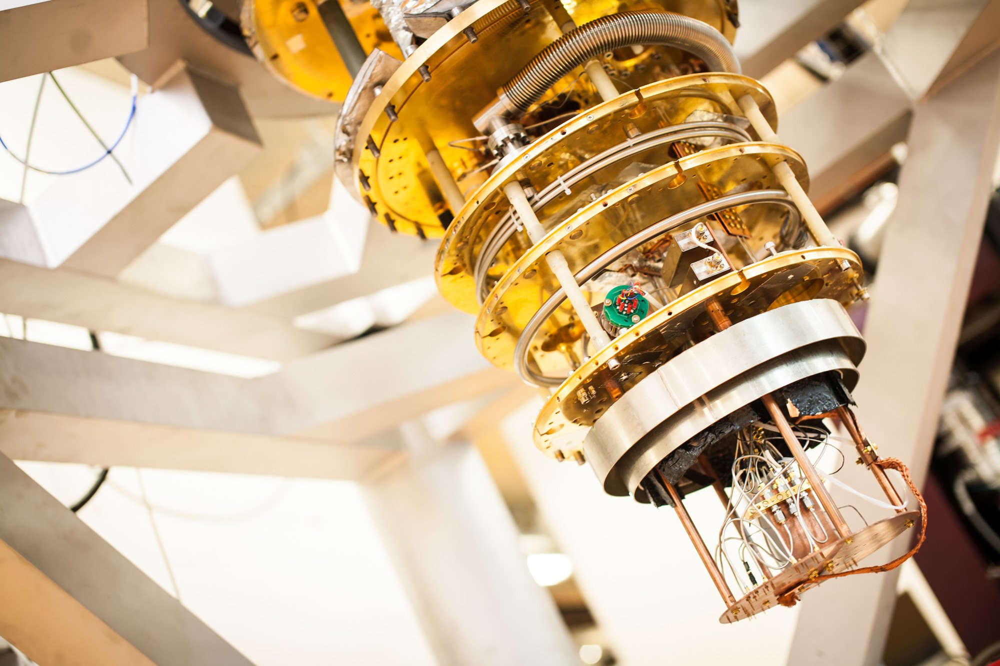

Research
Even if Intel is relatively late to the game of the quantum supremacy, after two months from releasing the 17 qubit chip, they came up with a 49 qubit computer on 11 January 2018. It was an important step for Intel because Google, IBM and D-Wave are also pushing to develop the first quantum machine capable of performing real work. Intel’s roadmap suggests researchers could achieve 1,000-qubit systems within 5 to 7 years. That sounds like a lot until you realize that many experts believe quantum computers will need at least one million qubits to become useful from a commercial standpoint. Those 49 qubits can solve a sorting problem that has up to 5.63 trillion possible outcomes. Each time you add a qubit you raise two to a higher exponent value, so Intel’s chip holds 562,949,950,000,000 variations that can be compared at once. Maybe you are asking why we need to compute so many operations, right? This technique is ideal for certain types of calculations like simulating interactions between atoms and dozens of electrons.

Quantum computing took one step closer to becoming a reality last month, as research groups associated with Intel successfully tested a new quantum computing architecture called spin qubits. On 15 of February 2018 the Intel announced that they discovered a 2 qubit chip which is made by silicon which are called spin qubits. With this new two-qubit quantum processor in a silicon device we can perform the Deutsch-Josza algorithm and the Grover search algorithm
Why research spin qubits? They’re small and strong . Spin qubits are much smaller in physical size and their coherence time is expected to be longer - an advantage as researchers aim to scale the system to the millions of qubits that will be required for a commercial system. They can function at higher temperatures: Silicon spin qubits can operate at higher temperatures than superconducting qubits (1 kelvin as opposed to 20 millikelvin).
BIBLIOGRAPHY
[1] https://newsroom.intel.com/press-kits/quantum-computing/
[2] https://www.extremetech.com/computing/261734-intel-unveils-new-quantum-computer-declares-quantum-breakthrough